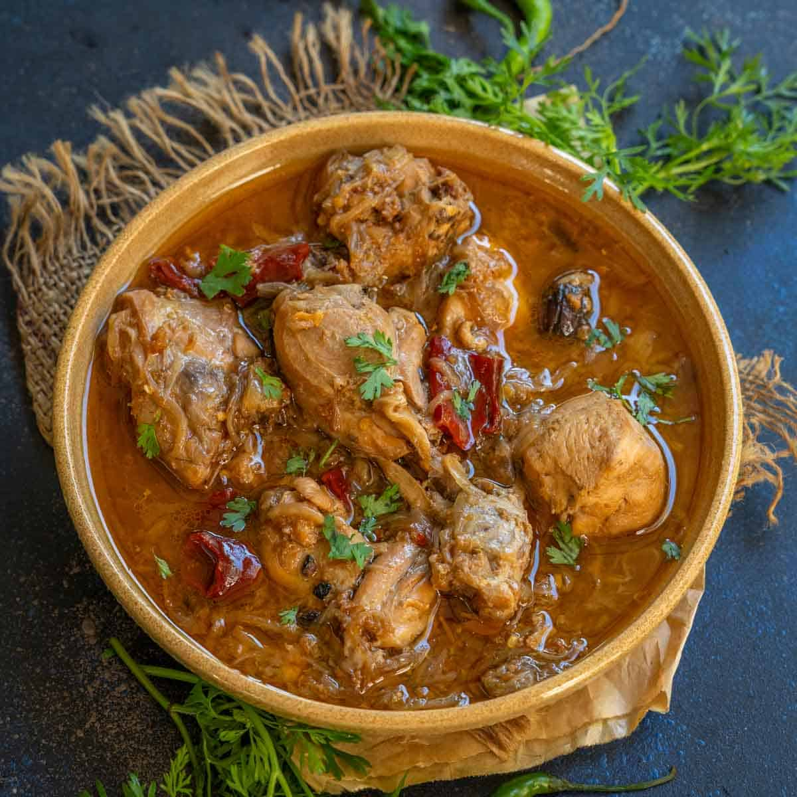

Chicken Mughlai

Description
Chicken Mughlai is a rich and creamy Indian curry inspired by the royal kitchens of the Mughal Empire. It is prepared with tender chicken pieces cooked in a luxurious gravy made from yogurt, cream, nuts, and aromatic spices.
The dish is known for its mild heat, velvety texture, and delightful aroma. It is commonly served with naan, roti, or fragrant basmati rice.
Ingredients
- 500 g chicken
- 2 onions, finely sliced
- 1/2 cup yogurt
- 2 tbsp cream
- 10 cashews
- 1 tbsp ginger-garlic paste
- 1 tsp turmeric powder
- 1 tsp red chili powder
- 1 tsp garam masala
- 2 tbsp oil or ghee
- Salt to taste
Steps
- Heat oil and fry onions until golden brown.
- Add ginger-garlic paste and sauté.
- Add chicken and cook until lightly browned.
- Mix in yogurt and spices.
- Add cashew paste and simmer.
- Stir in cream and garam masala.
- Cook until chicken is tender.
- Serve hot with naan or rice.
Home page